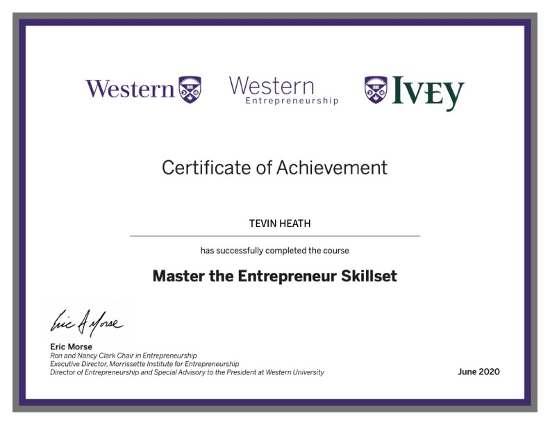
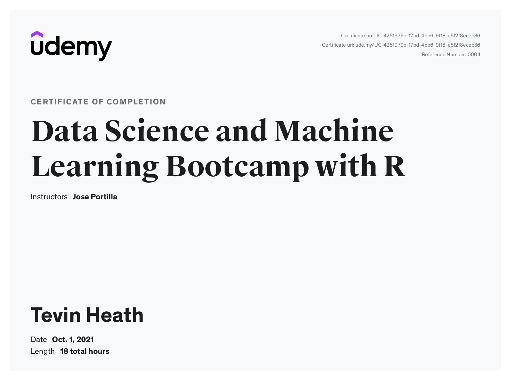
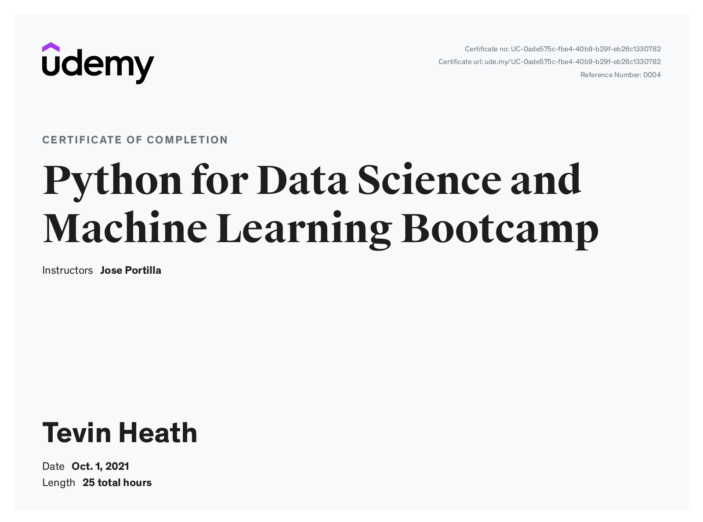

Education
Hello world, I’m Tevin - a first-year Bachelor of Engineering student studying Computer Engineering at University of Guelph. I am deeply passionate about computer networks, signal processing & communication, and control systems design for educational and commercial use. I have previous educational training in Mathematics and Statistics, where I focused on data science, machine learning, biostatistics, research design, and project management. I would like to make the world a better place, while inspiring others to do the same.
Bachelor of Engineering in Computer Engineering (Co-op)
The University of Guelph (Sep. 2023 - PRESENT)- Interests:
- Hardware Design & Modelling
- Control System Engineering
- Electrical Engineering
- Computer System Design & Networks
- Interests:
Bachelor of Science (Honours) in Mathematics & Statistics
McMaster University (Sep. 2016 - Jul 2020)- Interests:
- Data Science
- Machine Learning
- Applied Statistics & Biostatitics
- Time Series Modelling
- Statistical Programming
- Interests:
Internship Experience
Data and Decision Support Intern, Cambridge Memorial Hospital (June 2022 to Sept 2022)
Business & Data Analyst Intern, Homewood Health Inc. (April 2022 - June 2022)
Senior Consultant Intern, KPMG Canada (October 2021 - May 2022)
Municipal Supervisor Intern, City of London, Ontario (June 2021 - October 2021)
Professional Development Certificates
Western Ivey Program Entrepreneurship Certificate (2020)

R Programming Data Science @ Udemy (2021)
Python Data Science @ Udemy (2021)
Undergraduate Publications
During my 2nd year in the Mathematics & Statistics program at McMaster University. I was selected as the only undergraduate student to work with Dr. Federico Germini, an assistant professor at McMaster University within the Department of Medicine and Division of Hematology and Thromboembolism and other internationally recognized scholars in contributing to analysis of evidence-based research in emergency medicine. I was part of the publication team that to assisted Dr. Federico Germini in the data management and analysis, as well as the statistical review by providing timely feedback and input over any statistical issues corresponding draft before final submission and final publication. As an undergraduate student I received my name on the publication for my contribution. This experience provided me with an in-depth practical skills of data analysis, statistical programming, project communication within research. Additionally, it provided a first look for research design from the start of a project towards submission and acceptance.
This publication was accepted on August 2, 2019 and published on November 6, 2019:
Programming Languages
- C
- C++
- Matlab & Simulink
- Python
- Java
- HTML/CSS
- SQL
- R